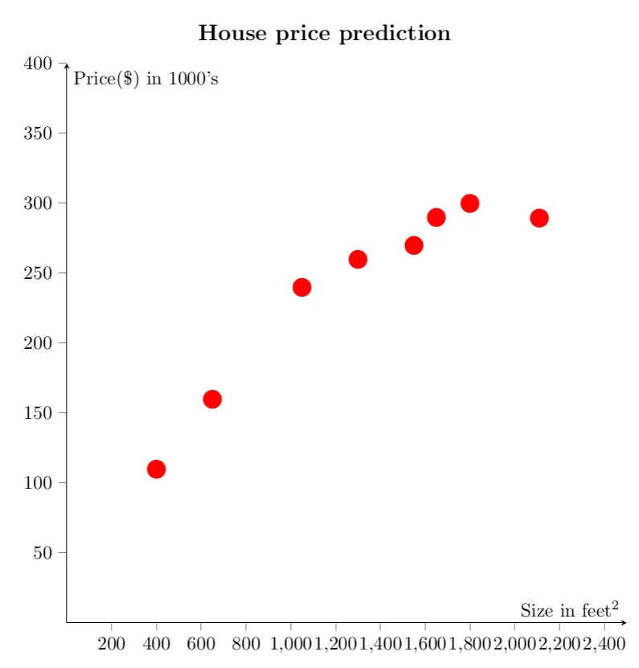
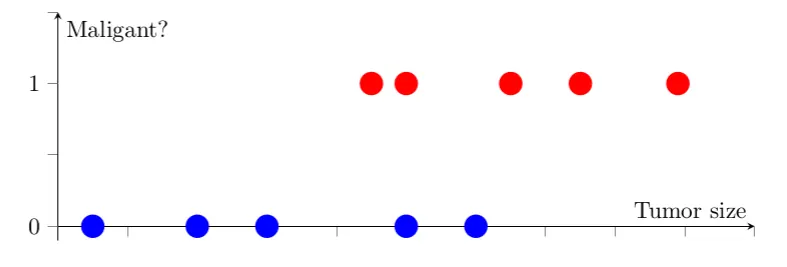
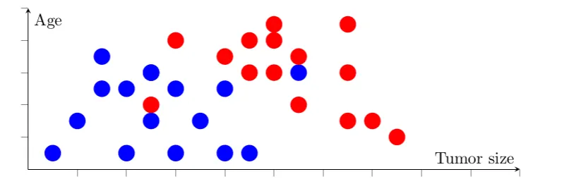
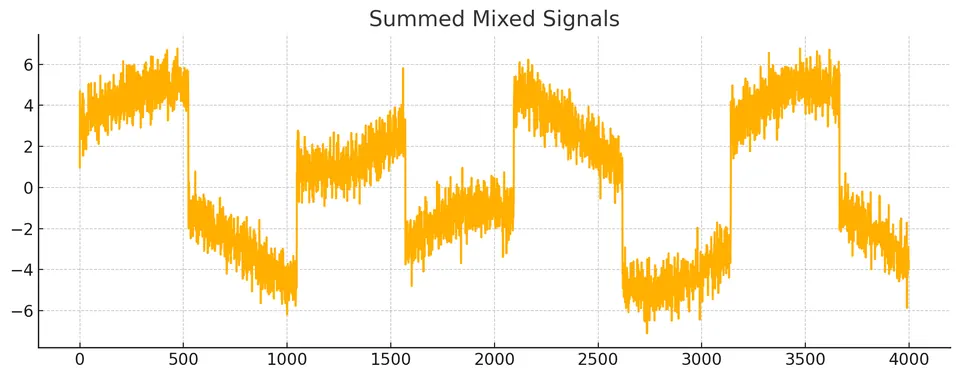
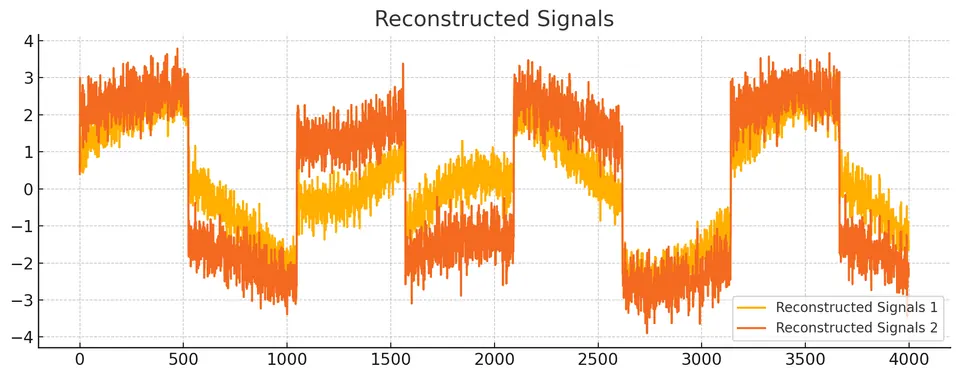
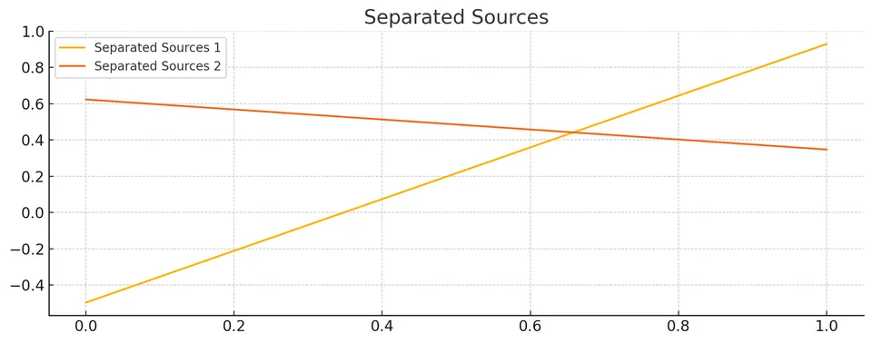

Machine Learning (ML), a subset of artificial intelligence, is the scientific study of algorithms and statistical models that computer systems use to effectively perform a specific task without using explicit instructions. It relies on patterns and inference instead. ML algorithms build a mathematical model based on sample data, known as "training data," to make predictions or decisions without being explicitly programmed to perform the task.
Deep learning, a subset of ML, uses layered neural networks to simulate human decision-making. Key aspects include:
Deep learning is particularly useful in areas such as image and speech recognition, where the volume and complexity of data surpass the capabilities of traditional algorithms.
ML's growing importance is attributed to its ability to leverage large amounts of data, enabling machines to recognize patterns and make informed decisions. It's considered a key to building systems that can simulate human intelligence.
Supervised learning, a dominant approach in machine learning, focuses on using labeled datasets to train algorithms. These algorithms are then applied to classify data or predict outcomes with a high level of accuracy.
Consider a typical problem: predicting house prices based on their size. For instance, estimating the price of a 750 square feet house. This problem can be approached using different models:

In a classification problem, the aim is to categorize data into discrete groups. For example, determining if a tumor is malignant based on its size is a classic classification problem.

When considering multiple attributes, such as age and tumor size, classification becomes more intricate. We can use algorithms to draw boundaries between different classes in this multidimensional feature space.

Unsupervised learning, in contrast to supervised learning, uses datasets without predefined labels. The goal here is to identify patterns or structures within the data.
The Cocktail Party Problem is an audio processing challenge where the goal is to separate individual audio sources from a mixture of sounds. This scenario is common in environments like parties, where multiple people are talking simultaneously, and you want to isolate the speech of a single person from a recording that captures all the speakers.
$$ X = U \Sigma V^* $$
Where:
SVD is particularly useful here because it provides a robust way to deconstruct the mixed signals into components that are easier to separate and analyze. The orthogonal matrices $U$ and $V$ represent the bases in the original and transformed spaces, respectively, while the singular values in $S$ represent the strength of each component in the data. By filtering or modifying these components, we can work towards isolating individual audio sources from the mix.
This mock code illustrates the use of SVD for signal reconstruction and ICA for source separation, addressing the Cocktail Party Problem in audio processing:
import numpy as np
import matplotlib.pyplot as plt
from sklearn.decomposition import FastICA
# Function to perform Singular Value Decomposition
def perform_svd(X):
U, S, V = np.linalg.svd(X, full_matrices=False)
return U, S, V
# Function to plot individual signals
def plot_individual_signals(signals, title):
plt.figure(figsize=(10, 4))
for i, signal in enumerate(signals):
plt.plot(signal, label=f'{title} {i+1}')
plt.title(title)
plt.legend()
plt.tight_layout()
plt.show()
# Function to plot a single signal
def plot_single_signal(signal, title):
plt.figure(figsize=(10, 4))
plt.plot(signal)
plt.title(title)
plt.tight_layout()
plt.show()
# Generate original signals for comparison
def generate_original_signals():
np.random.seed(0)
time = np.linspace(0, 8, 4000)
s1 = np.sin(2 * time) # Signal 1 : sinusoidal signal
s2 = np.sign(np.sin(3 * time)) # Signal 2 : square signal
return np.c_[s1, s2]
# Generate mixed signals for demonstration purposes
def simulate_mixed_signals():
S = generate_original_signals()
S += 0.2 * np.random.normal(size=S.shape) # Add noise
S /= S.std(axis=0) # Standardize data
# Mixing matrix
A = np.array([[1, 1], [0.5, 2]])
X = np.dot(S, A.T) # Generate observations
return X, S # Return both mixed signals and original sources
# Generate mixed and original signals
mixed_signals, original_sources = simulate_mixed_signals()
# Perform SVD on the mixed signals
U, S, V = perform_svd(mixed_signals)
# Reconstruct the signals using the top singular values
top_k = 2 # Number of top components to use for reconstruction
reconstructed = np.dot(U[:, :top_k], np.dot(np.diag(S[:top_k]), V[:top_k, :]))
# Apply Independent Component Analysis (ICA) to separate the sources
ica = FastICA(n_components=2)
sources = ica.fit_transform(reconstructed.T).T
# Sum the mixed signals to represent the original combined signal
summed_mixed_signals = mixed_signals.sum(axis=1)
# Plot the summed mixed signals, reconstructed signals, and separated sources
plot_single_signal(summed_mixed_signals, 'Summed Mixed Signals')
plot_individual_signals(reconstructed.T, 'Reconstructed Signals')
plot_individual_signals(sources, 'Separated Sources')Original signal:

Reconstructed signals:

Separated sources:

These notes are based on the free video lectures offered by Stanford University, led by Professor Andrew Ng. These lectures are part of the renowned Machine Learning course available on Coursera. For more information and to access the full course, visit the Coursera course page.